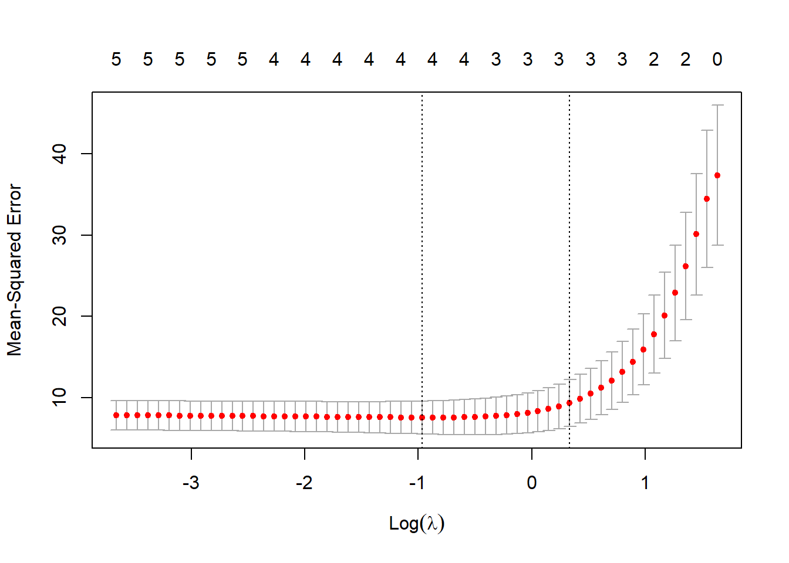

What is, what is it used for, and how to use Lasso regression, with code in R.
Author
Carlos Fernández
Published
January 26, 2024
Introduction
In this post, I explain what Lasso regression is, what it is used for, and how to use it, with code in R.
What is Lasso regression?
Lasso regression is a modified version of linear regression whose objective is to find the simplest model possible. In order to do that, Lasso method penalizes large regression coefficients, leaving smaller coefficients and even removing some variables from the final model (i.e., setting their coefficients to zero).
Lasso is an acronym of Least Absolute Shrinkage and Selector Operator.
What is Lasso regression used for?
Lasso regression is used mainly in two applications:
Model variable selection: Lasso can be used as a method to select the most important variables in a regression model. The least important variables will have their coefficients set to zero, effectively being removed from the final model.
Parameter shrinkage: Lasso’s coefficients are smaller thant those of a simple lineal regression. This helps to avoid overfitting problems.
Given their two main functions, Lasso regression is usually employed in the following situations:
When we have a high-dimensionality dataset, i.e., with a large number of variables.
When we have multicolineallity in our model, i.e., several variables are lineally dependent of one another.
When we want to automatize the model building, via automatizing the selection of the included variables.
How does Lasso regression work?
A traditional multivariable lineal regression model finds a set of regression coefficients (\(\beta_0, \beta_1, \beta_2...\)) that minimizes the residuals’ squared sum (RSS). That is, the distance between the datapoints and the model predictions.
Lasso regression adds another parameter called L1. L1 is defined as the sum of the absolute values of the model coefficients. Lasso method tries to minimize the sum of RSS and L1. As a consequence, Lasso finds a model with smaller regression coefficients. This whole process is known as “L1 regularization”, and it produces a coefficient “shrinkage”.
Every time we run a Lasso regression, whe need to specify the lambda parameter (\(\lambda\)). Lambda represents the relative importance of the L1 parameter compared to the RSS part of the minimization formula.
With \(\lambda = 0\), there is no coefficient shrinkage, and the Lasso model is effectively equal to a regular linear regression model.
As \(\lambda\) grows, there is more shrinkage, and more variables are removed from the model.
If \(\lambda\) were to be infinite, all coefficients would be removed, and we would end up with an empty model.
Lasso regression formula
\(min(RSS + \lambda \sum |\beta_j|)\)
Where
\(RSS\) es the residuals’ square sum.
\(\lambda\) is Lasso’s penalizing factor.
\(\sum |\beta_j|\) is the sum of the absolute values of the regression coefficients.
Code in R
Getting ready
In this example, we’ll use the glmnet library and the example dataset in mtcars.
# install.packages("glmnet") # Install the package (only once)library(glmnet)head(mtcars)
We’ll use mpg (miles per galon) as the outcome variable, and cyl (number of cylinders), hp (horsepower), wt (weight), gear (gear number) y drat (axis relation?) as predictive variables.
# Define the outcome variabley <- mtcars$mpg# Define the predictive variablesx <-data.matrix(mtcars[, c("cyl", "hp", "wt", "drat", "gear")])
Choose a value for lambda
Podemos elegir el valor de \(\lambda\) que minimice el error cuadrado medio (mean-squared error, MSE). La función cv.glmnet() realiza “validación cruzada de k iteraciones” (K-fold cross-validation) para identificar este valor de \(\lambda\).
# validación cruzadacv_model <-cv.glmnet(x, y, alpha =1) # Cambiar el parámetro alpha da lugar a otros tipos de regresión# encontrar el valor lambda que minimiza el MSEbest_lambda <- cv_model$lambda.minbest_lambda
[1] 0.315814
# mostrar los resultados en un gráficoplot(cv_model)

El valor de lambda que minimiza el MSE resulta ser 0.315814, que en la gráfica corresponde al punto \(Log(\lambda)\) = -1.1526019.
Ajustar el modelo
# coeficientes del modelo best_model <-glmnet(x, y, alpha =1, lambda = best_lambda)coef(best_model)
6 x 1 sparse Matrix of class "dgCMatrix"
s0
(Intercept) 35.74777065
cyl -0.83999245
hp -0.01680443
wt -2.89776526
drat 0.36928132
gear .
Podemos observar como el coeficiente de gear aparece como un punto, lo que indica que la regresión Lasso ha eliminado el coeficiente, ya que la variable no era lo suficientemente importante.
Comparación con la regresión lineal sin Lasso
Como comparación, podemos ver los coeficientes que resultarían de un modelo de regresión lineal múltiple sin contracción de parámetros ni selección de variables.
linear_model <-lm(mpg ~ cyl + hp + wt + drat + gear, data = mtcars)cbind(coef(best_model), "Linear"=coef(linear_model))
6 x 2 sparse Matrix of class "dgCMatrix"
s0 Linear
(Intercept) 35.74777065 33.99417771
cyl -0.83999245 -0.72169272
hp -0.01680443 -0.02227636
wt -2.89776526 -2.92715539
drat 0.36928132 0.73105753
gear . 0.16750690
Los coeficientes del modelo Lasso se han contraído un poco, especialmente de la variable drat, y la variable gear ha sido automáticamente excluida.
Dudas y curiosidades
Algunas preguntas que me surgen para investigar y escribir nuevos posts:
¿Cómo elegir el valor de lambda?
¿Qué es el método de K-fold cross-validation?
¿Qué diferencia a Lasso de otros modelos similares como Ridge?
¿Qué utilidad tiene la regresión Lasso en el mundo de la salud pública? ¿Qué base de datos puedo usar como ejemplo?
¿Qué artículos hay publicados con esta metodología?